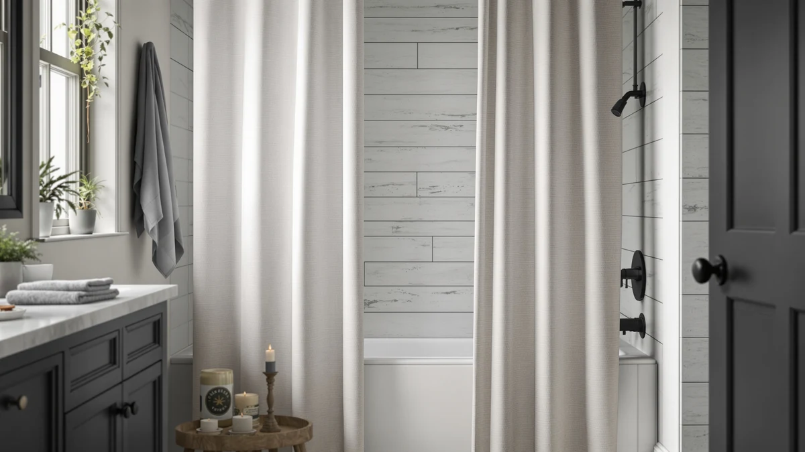

MIULEE 72 x 90 Review (2026): Worth It?
Prices and picks verified as of October 2026. Independent, reader-supported reviews.


Quick Answer
The MIULEE 72 x 90 Extra costs $27.99 for a 72 inch wide, 90 inch long curtain built from polyester and PEVA, 18 inches longer than the standard size most extra-long curtains use. It works as a longer, more water-resistant alternative to the linen-style Nanspring, XOGUIBO, and Farmhouse Striped Taupe curtains covered below, though those three cost $2 to $3 less if you don't need the added drop.
Our pick: MIULEE 72 x 90 Extra, $27.99 Check Price on Amazon
Bottom line: our top pick is the MIULEE 72 x 90 Extra Long Linen Shower Curtain Cream Beige 12 at $27.99.
Things to Know Before You Buy
- This MIULEE 72 x 90 review centers on the MIULEE 72 x 90 Extra ($27.99), a polyester and PEVA curtain sized 72 inches wide by 90 inches long, 18 inches longer than a standard curtain.
- The extra length is the main selling point, not the fabric. Polyester and PEVA won't give you the linen-style texture the alternatives below advertise.
- Nanspring, XOGUIBO, and the Farmhouse Striped Taupe curtain, covered as alternatives below, all cost $2 to $3 less and lean on a linen-blend look instead.
- Measure your shower rod height before ordering. A 72 by 90 inch curtain will pool at the bottom of a standard-height stall if you don't actually need the extra drop.
- If you're specifically comparing sizes, see our guide to choosing the right shower curtain size alongside this MIULEE 72 x 90 review.
This miulee 72 x 90 review looks at whether a $27.99 polyester and PEVA curtain in a 72 by 90 inch size earns a spot over three linen-named alternatives already covered on this site: the Nanspring Extra Long Linen Shower at $25.98, the XOGUIBO Floral Farmhouse Vintage Linen at $24.99, and the Farmhouse Striped Shower Curtain Taupe at $24.99. All four sit within three dollars of each other, so the differences that matter come down to size, material, and pattern rather than price alone.
MIULEE's 72 by 90 inch size is the clearest difference in this lineup, since it runs 18 inches longer than a standard 72 by 72 inch curtain and suits taller showers or walk-in stalls that leave a gap at the bottom with a shorter curtain. The listing specifies polyester and PEVA construction rather than the linen-style fabric that Nanspring, XOGUIBO, and the NDDYCU-made Farmhouse Striped curtain lean on in their product names. If length is the priority, the MIULEE W72 x L96 Extra Long curtain we reviewed separately runs taller still, but for a standard extra-long shower, the 72 by 90 inch size covered in this MIULEE 72 x 90 review is the more common fit.
Why You Should Trust Us
Best Shower Curtains reviews shower curtains by comparing manufacturer specs, current pricing, and verified owner feedback from the retailers that sell them, not by running a private testing lab. Ilane Tall, our home and bath editor, researched this MIULEE 72 x 90 review by checking MIULEE's listed material, size, and price against the Nanspring, XOGUIBO, and Farmhouse Striped curtains shoppers most often compare it with in this price range. We revisit prices and listings on a regular schedule and say so plainly when a product lacks the review history we would want before recommending it. Where a claim can't be checked against a specific verified rating or review count for this listing, we say so rather than fill the gap with a guess, which is why you won't see a star rating pulled from nowhere anywhere on this page.
Our Research Experience
We do not run a physical testing lab, and we have not hung the MIULEE 72 x 90 curtain in a shower ourselves. Our process instead compares the published material, size, and price against similar extra-long and linen-style curtains, then checks that against what verified owners report about fit, drape, and water resistance on comparable listings. For this MIULEE 72 x 90 review, that meant lining up MIULEE's polyester and PEVA build and 72 by 90 inch size against the Nanspring, XOGUIBO, and Farmhouse Striped curtains to see where the extra length earns its spot. We flag it clearly when a claim can't be verified against real owner feedback rather than guess at how a curtain performs over months of daily use. That approach means we can speak confidently about price, size, and material since those come straight from the listing, while we stay cautious about anything that depends on how a specific household's shower and water pressure affect the fabric over time.
Overview & Specs

MIULEE 72 x 90 Extra
What we like
- The 72 by 90 inch size gives you 18 inches more drop than a standard 72 by 72 inch curtain, which matters for walk-in showers or stalls with a taller rod
- Polyester and PEVA are both water-resistant materials, so this curtain may need less reliance on a separate liner than the linen-blend alternatives below
- Pack of 1 keeps the purchase simple, since you're buying exactly one curtain sized for one shower
Flaws but not dealbreakers
- At $27.99, it costs $2 to $3 more than the Nanspring, XOGUIBO, and Farmhouse Striped curtains covered below
- The extra-long 72 by 90 inch size will pool at the bottom of a standard-height shower, so measure your rod first
- Polyester and PEVA won't give you the textured, linen-style look the alternatives advertise in their own product names
| Material | Polyester / PEVA |
| Size | 72"W x 90"L (Pack of 1) |
MIULEE builds this curtain from polyester and PEVA rather than linen or cotton, and sells it in a 72 by 90 inch size, 18 inches longer than the standard 72 by 72 inch curtain most bathrooms use. That extra length is the main reason to consider it over the Nanspring, XOGUIBO, or Farmhouse Striped curtains covered below, all of which top out at a standard height. At $27.99, it's the most expensive of the four curtains in this MIULEE 72 x 90 review, a premium that tracks with the added material needed for the longer size.
Because polyester and PEVA are both water-resistant on their own, this curtain sits in a different category from the linen-style fabric that Nanspring, XOGUIBO, and the Farmhouse Striped Taupe curtain lean on in their product names. Those three curtains likely benefit more from a liner than MIULEE's build does, though pairing any shower curtain with a liner remains the safer choice for daily use. If your shower rod sits at a standard height and 72 inches of drop is already enough, the shorter and cheaper alternatives below may be the better value. If you've measured a taller stall, the extra 18 inches here solves a fit problem the others don't address.
What We Liked
The clearest reason to consider the MIULEE 72 x 90 Extra is the size. At 72 by 90 inches, it covers 18 inches more drop than the standard 72 by 72 inch curtain that most of the alternatives in this MIULEE 72 x 90 review use, which matters if your shower has a taller rod or a walk-in stall where a shorter curtain leaves a gap near the floor. The polyester and PEVA build also puts it in a different material category than the Nanspring, XOGUIBO, and Farmhouse Striped curtains, each of which markets itself around a linen-style weave. Polyester and PEVA are both inherently more water-resistant than cotton or linen blends, so you may get away with lighter reliance on a separate liner, though we'd still recommend one for full coverage. Pack of 1 keeps the purchase simple too: you're buying exactly one curtain sized for one shower, with no guesswork about whether a multi-pack listing actually matches your opening. For a bathroom with a taller-than-average shower enclosure, the combination of extra length and a water-resistant fabric makes a reasonable case for paying a few dollars more than the shorter alternatives.
What Could Be Better
The biggest tradeoff with the MIULEE 72 x 90 Extra is price relative to the competition. At $27.99, it costs $2 more than Nanspring's extra-long linen curtain and $3 more than either the XOGUIBO or Farmhouse Striped options, a gap that adds up if you're furnishing more than one bathroom. The 72 by 90 inch size is also a commitment in the other direction: if your shower rod sits at a typical height, the extra 18 inches of fabric will pool at the bottom rather than hang flat, so this isn't the pick for a standard-height stall. And because the material is polyester and PEVA rather than a linen-style weave, you lose the softer, more textured look that Nanspring, XOGUIBO, and the Farmhouse Striped Taupe curtain all advertise directly in their product names. If pattern and texture matter more to you than extra length, one of those three curtains will likely satisfy that preference better than MIULEE's plainer, utilitarian build.
Who Is It For?
The MIULEE 72 x 90 Extra suits bathrooms with a taller shower rod or a walk-in stall where a standard 72 by 72 inch curtain leaves a visible gap at the bottom. It's also a reasonable pick if you'd rather not add a liner, since polyester and PEVA already resist water better than the linen-blend fabric the alternatives in this MIULEE 72 x 90 review are named for. Skip it if your shower opening is a standard height, since you'd be paying $27.99 for length you don't need when the Nanspring, XOGUIBO, or Farmhouse Striped curtains cover the same width for less. Shoppers who care more about a textured, farmhouse, or floral look than about fit will likely prefer one of those three alternatives, since MIULEE's polyester and PEVA build trades pattern for practicality.
Alternatives to Consider
If the 72 by 90 inch size or the polyester and PEVA build rules out the MIULEE 72 x 90 Extra for your bathroom, these three curtains round out the comparison in this MIULEE 72 x 90 review, each priced within a few dollars of it. All three lean toward a linen-style pattern and texture rather than the plainer, longer build MIULEE offers, so weigh which priority matters more before choosing between them.

Editor's Pick
Nanspring Extra Long Linen Shower
Nanspring's Extra Long Linen Shower curtain costs $25.98, about $2 less than MIULEE, and its name points to a linen-style fabric rather than the polyester and PEVA build reviewed above.
$25.98
Check Price on Amazon
Best Value
XOGUIBO Floral Farmhouse Vintage Linen
At $24.99, the XOGUIBO Floral Farmhouse Vintage Linen curtain is the cheapest of the four, and its floral farmhouse pattern gives you a decorative option that MIULEE's plain build doesn't offer.
$24.99
Check Price on Amazon
Premium Choice
Farmhouse Striped Shower Curtain Taupe
The Farmhouse Striped Shower Curtain Taupe also runs $24.99 and swaps XOGUIBO's floral print for a striped farmhouse pattern, worth considering if stripes suit your bathroom better than florals.
$24.99
Check Price on AmazonIs the MIULEE 72 x 90 curtain actually linen?
No.
What size shower does the MIULEE 72 x 90 fit?
It's built for a 72 inch wide opening with 90 inches of drop, 18 inches longer than the standard 72 by 72 inch curtain.
Frequently Asked Questions
Is the MIULEE 72 x 90 curtain actually linen?
No. The listing specifies polyester and PEVA construction, not linen or cotton. If you want a true linen-style fabric, the Nanspring, XOGUIBO, and Farmhouse Striped curtains covered in this MIULEE 72 x 90 review all market themselves around a linen-blend weave instead.
What size shower does the MIULEE 72 x 90 fit?
It's built for a 72 inch wide opening with 90 inches of drop, 18 inches longer than the standard 72 by 72 inch curtain. Measure your rod height before ordering, since the extra length will pool at the bottom of a standard-height shower.
Do I still need a liner with the MIULEE 72 x 90 curtain?
Polyester and PEVA are both water-resistant on their own, which may reduce how much you rely on a liner compared with the linen-blend alternatives, but pairing any shower curtain with a liner is still the safer choice for keeping water inside the tub.
Final Verdict
This MIULEE 72 x 90 review comes down to a simple tradeoff: pay $2 to $3 more for 18 extra inches of length and a more water-resistant polyester and PEVA build, or stick with the shorter, linen-style curtains that Nanspring, XOGUIBO, and the Farmhouse Striped Taupe option all offer at a lower price. MIULEE earns its place for showers with a taller rod or a walk-in stall where a standard curtain leaves a gap, and the water-resistant material is a reasonable bonus for anyone who'd rather not add a liner. If your shower is a standard height or you care more about a textured, patterned look, one of the three alternatives below will likely serve you better. For most people shopping specifically for an extra-long fit, the MIULEE 72 x 90 is the pick worth checking first.